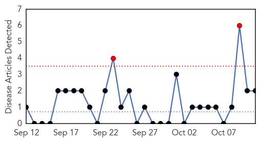
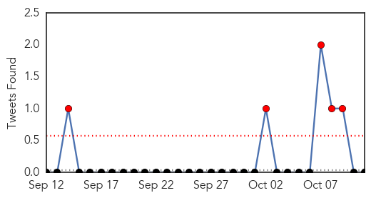

Ebola
30-Day Web Trend
8 alerts, 1 warnings

30-Day Twitter Trend
5 alerts, 4 warnings

Article Locations

Article Confidences

Top Articles:
- 1.000
- Ebola monitoring begins at JFK; more people hospitalized in Spain for observation
- 1.000
- WHO paints grim picture of Ebola with over 4,000 deaths
- 1.000
- Ebola advances in West Africa
- 1.000
- Ebola Toll Passes 4,000 As Fears Grow Worldwide
- 1.000
- New Ebola fears with second case in Dallas: What you need to know
- 1.000
- Britain holds Ebola outbreak test
- 1.000
- Ebola: Timeline of a ruthless killer without a cure
- 1.000
- Ebola crisis: Britain and US step up measures to combat spread of virus
- 1.000
- Ebola toll passes 4,000 as fears grow worldwide – BorneoPost Online
- 1.000
- Britain prepares for Ebola crisis as deaths continue to rise
- 1.000
- Frankfort & Franklin County, Kentucky
- 1.000
- Tracking Ebola threat from Africa to Texas
- 1.000
- Britain holds Ebola outbreak test
- 1.000
- Ebola: More fears, more measures after first patient diagnosed in the U.S. dies
- 1.000
- Congo confirms two Ebola cases unrelated to West African epidemic
- 1.000
- Ebola crisis: Spanish nurse Teresa Romero in 'better' state; New York airport starts health screenings
- 1.000
- Ebola Screenings to Start Nationally at Five Airports
- 1.000
- Otago Daily Times Online News : Otago, South Island, New Zealand & International News
- 1.000
- Rush on to build Ebola units
- 1.000
- Ebola Expert: How Health Care Workers Can Avoid the Disease
- 1.000
- U.S. Ebola strategy assigns critical role to airport quarantine stations
- 1.000
- What You Need to Know: How the Ebola Virus Is Spread
- 1.000
- Screening for Ebola becomes priority as virus continues to spread (VIDEO)
- 1.000
- Key things you need to know about Ebola today
- 1.000
- Ebola in Europe: Nurse treating Teresa Romero among three more quarantined in Spain
- 1.000
- Ebola outbreak: Britain stages emergency drills as RFA Argus prepares to deploy to Sierra Leone
- 1.000
- Ebola outbreak: Britain stages emergency drills as RFA Argus prepares to deploy to Sierra Leone
- 1.000
- Ebola outbreak could lead to an economic disaster in West Africa for years to come
- 1.000
- African Man Thought To Have Ebola Has Malaria, Kansas Officials Say
- 1.000
- Ebola numbers contain more questions than answers
- 1.000
- Ebola toll passes 4,000 as fears grow worldwide
- 1.000
- British 'Ebola victim' in Macedonia did NOT have disease and died after drinking binge
- 1.000
- Ebola outbreak: Get up to speed
- 1.000
- Is Ebola airborne? Virus could evolve to become transmitted through air
- 1.000
- Universal access to health care will reduce the threat from Ebola
- 1.000
- Airline and hospital officials said a Delta Air Lines plane was held at McCarran International Airport, but it turned out to be a false alarm and an all-clear was issued.
- 1.000
- New York's JFK airport starts Ebola checks
- 1.000
- UK expects 'handful' of Ebola cases
- 1.000
- Ebola screens find no Arizona cases
- 1.000
- Ebola toll passes 4,000 as fears grow worldwide
- 1.000
- Area hospitals preparing for the worst with Ebola
- 1.000
- Ebola advances in West Africa
- 1.000
- Ebola toll passes 4,000 as fears grow worldwide
- 1.000
- Ebola death toll hits 4,000
- 1.000
- Ebola Toll Passes 4,000 As Fears Grow Worldwide
- 1.000
- New York's JFK Airport Begins Screening Passengers for Ebola
- 1.000
- PH weighs Ebola options
- 1.000
- Ebola Screenings Begin At JFK; Four More Airports Start Next Week
- 1.000
- Fears of global Ebola outbreak escalate
- 1.000
- Ebola screenings begin at John F. Kennedy International Airport in New York
Showing top 50 articles...
Top Tweets:
- 0.754
- MT: Impressive. @BrusselsAirNews CEO leading from front as flight steward ex Liberia. Keep West Africa open. Ebola
- 0.621
- Spain seeks answers as seven more enter Ebola hospital http://t.co/iUugFm7wi2
- 0.609
- RT: @WHO and media shouldn't continue to communicate only on updated cumulative figures for Ebola. Weekly no of cases are much m…
- 0.598
- AFD Blog `Sierra Leone’s Ebola Battle Shifts To Facilitating Home Care' http://t.co/QSVLrUMJ8J
- 0.594
- RT: Ebola outbreak: Postpone Africa Cup of Nations, say hosts Morocco http://t.co/Ev9czAwlfi
- 0.588
- RT: Isolating countries will make Ebola response harder & create greater humanitarian/health care emergency http://t.co/0nKf…
- 0.554
- RT: SUNDAY: We'll talk about the Ebola crisis with CDC director and CBS News chief medical correspondent…
- 0.533
- RT: AFD Blog `Sierra Leone’s Ebola Battle Shifts To Facilitating Home Care' http://t.co/QSVLrUMJ8J
- 0.530
- New Sierra Leone policy: equip families to care for Ebola pts at home. MT @DavidFisman http://t.co/niWxXeule1
- 0.518
- RT: Struggle to fight Ebola: people in SierraLeone slums very poor w/ little access to clean water & sanitation http://t.…
- 0.515
- A crucial message from celebrity ambassador to spread awareness about the Ebola crisis! https://t.co/XDxi9jBB5Y endebolanow
Swine Flu
30-Day Web Trend
2 alerts, 0 warnings

30-Day Twitter Trend
5 alerts, 0 warnings

Article Locations
Article Confidences
Top Articles:
Top Tweets:
-
No tweets found for Oct 11, 2014